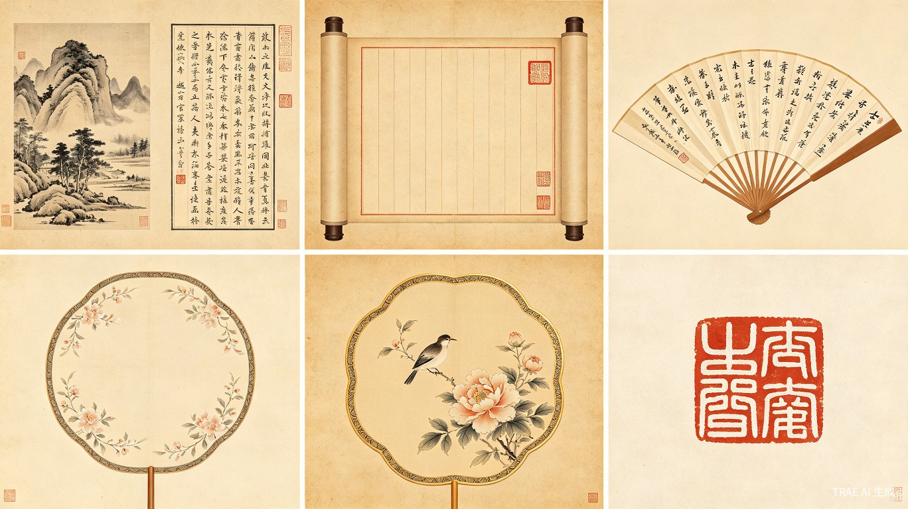
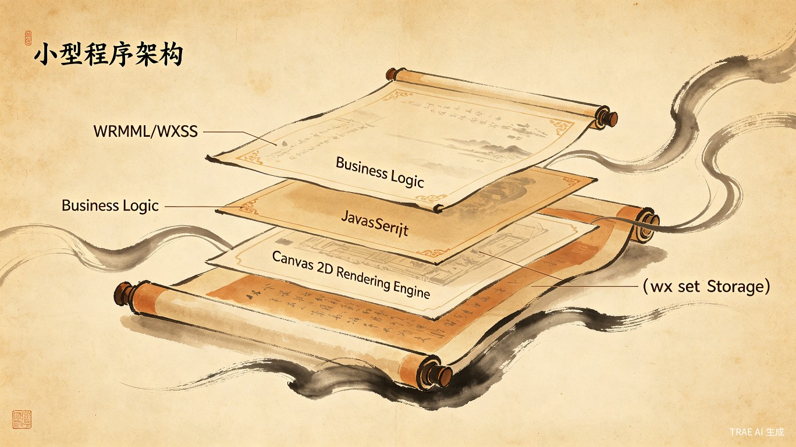

一、文档概述
项目背景与目标
近年来，古风文化在年轻群体中持续升温。汉服出行、诗词吟诵、书法研习不再是小众爱好，而逐渐成为社交媒体上的热门内容形式。大量用户在朋友圈、小红书等平台分享带有古风韵味的文字内容，却缺少一款轻量、专注、即开即用的排版工具。
现有方案要么依赖后端 AI 生成图片（成本高、速度慢），要么功能臃肿（混杂了社交、社区等无关功能），要么视觉品质粗糙，无法满足用户对"古风美学"的基本期待。
墨韵的目标是填补这一空白：打造一款纯前端、零服务器成本的微信小程序，让用户输入一段文字，选择一个古风模板，即可生成一张具有传统美学品质的图片，保存到手机相册。
以最小 MVP 形式上线，验证"古风文字排版"这一需求场景的用户意愿和留存。MVP 仅支持文字排版，不含图片素材、AI 生成、社区分享等扩展功能。
目标用户画像
| 画像 | 特征描述 | 核心诉求 | 使用频率 |
|---|---|---|---|
| 古风文化爱好者 | 18-35 岁，喜欢汉服、古风音乐、传统文学，活跃于微博、小红书 | 将喜欢的诗词、句子以古风形式呈现，分享到社交平台 | 每周 2-3 次 |
| 诗词爱好者 | 25-50 岁，有一定文学修养，喜欢抄写、品读古诗词 | 将诗词以传统排版形式保存，作为个人收藏或赠友 | 每周 1-2 次 |
| 社交媒体内容创作者 | 20-35 岁，运营个人账号，需要持续产出有品质的图文内容 | 快速生成古风风格文字图片，提升内容视觉品质 | 每天 1-2 次 |
| 书法/国画学习者 | 各年龄段，正在学习书法或国画，需要题字排版参考 | 模拟传统书法作品的排版效果，辅助学习 | 每周 1 次 |
产品定位与差异化
墨韵定位为"轻量级古风文字排版工具"。与市场上现有产品相比，核心差异化在于：
- 纯前端架构：无需注册登录，无需后端服务器，打开即用，零等待
- 专注文字排版：不做图片编辑、不做 AI 生成、不做社区，只把一件事做到极致
- 传统美学品质：模板设计遵循中国传统书画的构图法则（留白、题跋、落款、印章），而非简单的"加个古风边框"
- 横竖排切换：支持传统竖排和现代横排两种排版方式，满足不同场景需求
术语定义
| 术语 | 说明 |
|---|---|
| 竖排 | 文字从上到下、列从右到左排列，符合传统中文书写习惯 |
| 横排 | 文字从左到右、行从上到下排列，现代常见排版方式 |
| 题跋 | 书画作品上方的标题或说明文字 |
| 落款 | 书画作品下方的署名和日期 |
| 印章 | 书画作品中的红色印鉴，包括姓名章、引首章、压角章等 |
| 留白 | 画面中刻意的空白区域，是中国传统美学的核心原则 |
| Canvas 2D | 微信小程序新版画布接口，支持同步绘制和同层渲染 |
| 主包/分包 | 微信小程序代码包的划分方式，主包包含启动页面，分包按需加载 |
二、产品范围与核心功能
功能全景图
文字输入
输入日常文案，实时字数统计，自动保存草稿
模板选择
6 种古风模板，水墨/卷轴/折扇/团扇/工笔/篆刻
排版设置
横排/竖排切换，字体字号调节，行间距控制
图片生成
Canvas 实时预览，高清 2x 图片输出
图片保存
一键保存到手机相册，权限自动引导
本地存储
草稿自动保存，历史记录管理，模板偏好记忆
MVP 范围定义
MVP 阶段聚焦核心排版功能，明确以下范围：
| 范围 | 包含 | 不包含（后续迭代） |
|---|---|---|
| 文字输入 | 纯文本输入、字数统计、草稿保存 | 富文本编辑、表情符号、图片混排 |
| 模板 | 6 个内置古风模板 | 自定义模板、用户上传背景、AI 生成背景 |
| 排版 | 横排/竖排切换、字体选择（3 种）、字号调节 | 自定义颜色、文字阴影、文字特效 |
| 输出 | 生成图片、保存到相册 | 分享到微信/朋友圈、分享到其他平台 |
| 用户系统 | 无（纯本地） | 注册登录、云端同步、社区功能 |
后续迭代规划
| 阶段 | 核心内容 | 关键目标 |
|---|---|---|
| MVP（当前） | 文字输入 + 6 模板 + 横竖排 + 保存图片 | 验证核心需求，获取首批用户反馈 |
| V1.1 | 新增 6-12 个模板、增加字体选择（行书/隶书/篆书）、文字颜色调节 | 提升模板丰富度，满足更多风格偏好 |
| V1.2 | 分享到微信好友/朋友圈、生成海报（含小程序码） | 引入社交传播机制，降低获客成本 |
| V2.0 | 微信云开发接入、用户作品云端同步、模板商城 | 构建用户留存和商业化基础 |
三、功能需求详细说明
文字输入模块
用户在此模块中输入需要排版的文字内容。这是用户与小程序交互的起点。
功能概述
| 功能项 | 描述 |
|---|---|
| 文本输入区域 | 提供一个多行文本输入框（textarea），支持中英文输入。输入区域占编辑页面的上半部分，高度自适应内容，最大高度为屏幕 40%。初始状态显示占位提示文字，如"在此输入您的文字..." |
| 实时字数统计 | 输入区域右下角实时显示当前字数和所选模板的字数上限，格式为"已输入 12/50 字"。当字数接近上限（达到 90%）时，数字变为橙色警告；超过上限时，数字变为红色，并显示提示"已超出字数限制，请精简文字或更换模板" |
| 草稿自动保存 | 用户每次修改文字后，延迟 500ms 自动保存到本地存储（wx.setStorageSync）。再次进入编辑页时，自动恢复上次编辑的内容。每个模板独立保存一份草稿 |
| 清空按钮 | 输入区域右上角提供"清空"按钮，点击后弹出确认弹窗（"确定清空当前文字？"），确认后清空输入区域并删除对应草稿 |
交互逻辑
- 用户点击输入区域 → 弹出键盘 → 开始输入文字
- 每次输入后 500ms 触发自动保存，保存时无任何 UI 反馈（静默保存）
- 字数超出限制时，生成按钮变为禁用状态（灰色），点击时 toast 提示"请先精简文字"
- 切换模板时，若新模板字数限制小于当前字数，显示提示"当前模板最多支持 XX 字，请精简文字"
规则约束
- 输入内容仅支持纯文本，不支持富文本、图片、表情符号
- 单次输入最大长度为 200 字（受最大模板字数限制约束）
- 草稿数据以"模板 ID + 文字内容"为 key 存储
模板选择模块
用户在此模块中浏览和选择古风排版模板。模板是决定最终图片视觉风格的核心要素。
功能概述
| 功能项 | 描述 |
|---|---|
| 模板网格展示 | 以 2 列网格形式展示所有可用模板缩略图。每个模板卡片包含：模板缩略图预览、模板名称、字数上限标签。当前选中的模板卡片有朱红色边框高亮 |
| 模板分类标签 | 页面顶部提供分类标签栏：全部 | 水墨 | 卷轴 | 扇面 | 工笔 | 篆刻。点击标签筛选对应分类的模板 |
| 模板预览 | 点击模板卡片进入预览模式，展示模板完整效果（含示例文字排版效果）。预览页提供"使用此模板"和"返回"两个按钮 |
| 模板信息展示 | 模板卡片底部显示：模板名称、支持排版方向（横排/竖排/双向）、字数上限 |
交互逻辑
- 用户点击模板卡片 → 模板选中高亮 → 编辑页实时更新预览
- 长按模板卡片 → 弹出模板详情弹窗（含完整规格信息）
- 模板加载失败时，显示默认占位图和"加载失败"提示
排版设置模块
用户在此模块中调整排版参数，包括排版方向、字体、字号和间距。
功能概述
| 功能项 | 描述 |
|---|---|
| 横排/竖排切换 | 提供一个 Toggle 开关，在横排和竖排之间切换。部分模板仅支持竖排（如折扇、团扇），此时 Toggle 禁用并显示"此模板仅支持竖排" |
| 字体选择 | 提供 3 种字体选项：楷体（默认）、宋体、仿宋。以图标 + 文字的下拉选择器形式呈现。字体通过 wx.loadFontFace 从 CDN 加载 |
| 字号调节 | 提供滑块（Slider），范围 24-48px，默认值根据模板自动设定。拖动时实时更新预览 |
| 行间距调节 | 提供滑块（Slider），范围 1.2-2.5 倍行高，默认 1.8 倍。仅横排模式生效 |
| 字间距调节 | 提供滑块（Slider），范围 0-20px，默认 4px。仅竖排模式生效，控制竖排时相邻字符的间距 |
业务规则
- 排版方向受模板约束：部分模板仅支持竖排，切换到此类模板时自动切换为竖排
- 字号默认值由模板预设，用户可手动调节
- 所有排版参数变更后实时更新 Canvas 预览
图片生成模块
此模块负责将用户输入的文字按照所选模板和排版参数渲染为最终图片。
功能概述
| 功能项 | 描述 |
|---|---|
| Canvas 实时预览 | 编辑页下半部分展示 Canvas 画布，实时渲染当前排版效果。预览尺寸适配屏幕宽度，保持画布比例 |
| 高清图片生成 | 点击"生成图片"按钮后，以 2 倍设备像素比（DPR）重新渲染 Canvas，生成高清图片。生成过程中显示 loading 动画 |
| 生成进度反馈 | 生成过程中按钮变为 loading 状态，文字变为"生成中..."，禁止重复点击。生成完成后按钮恢复，toast 提示"图片已生成" |
绘制流程
规则约束
- 预览时使用 1x 渲染以保证性能，生成时使用 2x 渲染以保证清晰度
- Canvas 尺寸根据模板预设，不支持用户自定义画布大小
- 生成图片格式为 PNG，分辨率不低于 1080px（短边）
图片保存模块
用户将生成的图片保存到手机相册。
功能概述
| 功能项 | 描述 |
|---|---|
| 保存到相册 | 点击"保存图片"按钮，调用 wx.saveImageToPhotosAlbum 将生成的临时图片保存到手机系统相册 |
| 权限引导 | 首次保存时请求相册写入权限（scope.writePhotosAlbum）。若用户拒绝，弹出引导弹窗说明权限用途，提供"去设置"按钮跳转到系统设置页 |
| 保存反馈 | 保存成功：toast 提示"已保存到相册"。保存失败：toast 提示具体原因（权限不足/存储空间不足等） |
权限处理流程
边界与异常
- 用户手机存储空间不足时，提示"存储空间不足，请清理后重试"
- iOS 和 Android 的权限弹窗文案不同，使用系统默认弹窗
- 保存成功后将图片路径记录到历史记录（本地存储）
四、模板设计规范
模板分类体系
MVP 阶段提供 6 种古风模板，覆盖主流审美风格。每种模板遵循中国传统书画的构图原则，包含背景、边框、文字区域、印章位置等完整要素。

各模板详细规格
| 模板名称 | 画布尺寸 | 字数上限 | 排版方向 | 配色方案 | 边框样式 | 印章位置 | 推荐字体 |
|---|---|---|---|---|---|---|---|
| 水墨山水 | 1080 x 1920 | 50 字 | 竖排 | 水墨黑白 + 宣纸米色 | 无边框，大面积留白 | 右下角姓名章 | 楷体 |
| 卷轴书简 | 1080 x 1440 | 80 字 | 竖排 | 米黄底 + 朱红装饰 | 上下轴头，左右细线 | 右上引首章 + 右下姓名章 | 楷体 / 仿宋 |
| 折扇题字 | 1080 x 1080 | 30 字 | 竖排 | 米白底 + 墨色文字 | 扇形裁切边框 | 左下压角章 | 行书 |
| 团扇题诗 | 1080 x 1080 | 40 字 | 竖排 | 浅青底 + 墨色文字 | 圆形裁切边框 | 中心偏下印章 | 楷体 |
| 工笔花鸟 | 1080 x 1920 | 60 字 | 横排 / 竖排 | 淡彩底 + 金色边框 | 金色回纹双线边框 | 右上引首章 | 宋体 |
| 篆刻印章 | 1080 x 1080 | 20 字 | 竖排 | 朱红底 + 白色文字 | 方形印章边框 | 四角装饰印章 | 篆书 |
模板构图说明
每个模板的构图遵循传统书画的"三段式"布局原则：
- 上部（题跋区域）：放置标题或引言文字，字号较小，位于画面上方 1/4 区域
- 中部（主文区域）：放置用户输入的主要文字内容，占据画面核心位置
- 下部（落款区域）：放置日期、署名等信息，字号最小，配合印章元素
留白是古风排版的核心美学原则。每个模板的文字区域不超过画面总面积的 40%，确保画面有充足的"呼吸感"。
模板数据结构
每个模板以 JSON 对象形式定义，包含以下字段：
{
"id": "ink_landscape",
"name": "水墨山水",
"category": "ink",
"canvas": {
"width": 1080,
"height": 1920
},
"maxChars": 50,
"direction": ["vertical"],
"colorScheme": {
"background": "#F5F0E8",
"text": "#2C2C2C",
"accent": "#C41E24",
"border": "#D4C5A9"
},
"border": {
"type": "none",
"width": 0,
"padding": 80
},
"seal": {
"position": "bottom-right",
"type": "name",
"size": 60
},
"textArea": {
"x": 540,
"y": 960,
"maxWidth": 600,
"maxHeight": 1200,
"align": "center"
},
"defaultFont": "kai",
"defaultFontSize": 36,
"lineHeight": 1.8,
"letterSpacing": 8,
"backgroundImage": "https://cdn.example.com/templates/ink_landscape_bg.png"
}五、技术实现方案
技术架构
墨韵采用纯前端架构，所有计算和渲染均在用户设备本地完成，无需后端服务器。架构分为四层：

| 层级 | 技术 | 职责 |
|---|---|---|
| 视图层 | WXML + WXSS | 页面结构、样式渲染、组件化 UI |
| 逻辑层 | JavaScript | 用户交互处理、排版参数管理、模板配置解析 |
| 渲染层 | Canvas 2D API | 背景绘制、文字排版渲染、印章叠加、图片导出 |
| 存储层 | wx.setStorage API | 草稿保存、历史记录、用户偏好、模板缓存 |
Canvas 2D 绘图方案
使用微信小程序新版 Canvas 2D 接口（type="2d"），该接口支持同步绘制、同层渲染和完整的 Web Canvas 标准。
初始化流程
// WXML 声明
<canvas id="mainCanvas" type="2d" />
// JS 获取上下文
const query = wx.createSelectorQuery()
query.select('#mainCanvas')
.fields({ node: true, size: true })
.exec(res => {
const canvas = res[0].node
const ctx = canvas.getContext('2d')
const dpr = wx.getWindowInfo().pixelRatio
canvas.width = templateWidth * dpr
canvas.height = templateHeight * dpr
ctx.scale(dpr, dpr)
// 开始绘制...
})高清适配策略
- 预览模式：使用 1x DPR 渲染，降低性能开销
- 生成模式：使用 2x DPR 渲染，确保图片清晰度
- 获取设备像素比：
wx.getWindowInfo().pixelRatio - Canvas 物理尺寸 = 逻辑尺寸 x DPR，然后通过
ctx.scale(dpr, dpr)缩放坐标系
绘制顺序
- 背景层：填充背景色或绘制背景图片
- 装饰层：绘制边框、纹样、分隔线等装饰元素
- 文字层：根据排版方向（横排/竖排）绘制文字内容
- 印章层：在指定位置绘制印章图案
竖排文字算法
Canvas 原生不支持竖排文字，需要通过逐字绘制实现。核心算法如下：
function drawVerticalText(ctx, text, startX, startY, options) {
const { fontSize, lineHeight, letterSpacing, maxCols, colGap } = options
const chars = text.split('')
let col = 0, row = 0
let x = startX, y = startY
chars.forEach(char => {
const code = char.charCodeAt(0)
// 判断是否为全角字符
const isFullWidth = code > 0x2E7F || code === 0x3000
if (isFullWidth) {
// 全角字符：直接竖排绘制
ctx.fillText(char, x, y)
} else {
// 半角字符（英文/数字）：旋转 90 度后绘制
ctx.save()
ctx.translate(x, y)
ctx.rotate(Math.PI / 2)
ctx.fillText(char, 0, 0)
ctx.restore()
}
// 移动到下一个字符位置
y += fontSize + letterSpacing
// 超出单列最大高度时，换到下一列（从右到左）
if (y > startY + maxRows * (fontSize + letterSpacing)) {
col++
y = startY
x -= fontSize * lineHeight + colGap
}
})
}竖排排版规则
- 全角字符（中文汉字、中文标点）直接竖排，每个字符占一个位置
- 半角字符（英文字母、数字）旋转 90 度后竖排
- 多列排列时，从右到左排列（符合传统中文阅读习惯）
- 中文标点符号在竖排中保持正常方向，不做旋转
- 换行符触发换列操作
自定义字体加载方案
古风排版的核心在于字体。微信小程序通过 wx.loadFontFace API 加载自定义字体。
字体选型
| 字体名称 | 风格 | 用途 | 预估体积（woff2） |
|---|---|---|---|
| 楷体 | 秀丽端正 | 默认字体，适用于大多数场景 | ~1.5MB |
| 宋体 | 古朴典雅 | 工笔类模板的推荐字体 | ~1.2MB |
| 仿宋 | 清秀流畅 | 卷轴类模板的推荐字体 | ~1.3MB |
加载策略
wx.loadFontFace({
family: 'KaiTi',
source: 'url("https://cdn.example.com/fonts/kaiti.woff2")',
scopes: ['webview', 'native'], // native 作用域才能在 Canvas 中使用
success: () => {
console.log('字体加载成功')
},
fail: (err) => {
console.error('字体加载失败', err)
// 降级使用系统默认字体
}
})scopes 参数必须包含 'native'，否则字体仅在 WebView 中生效，无法在 Canvas 2D 中使用。字体文件体积建议控制在 2MB 以内，超过此体积在低端设备上可能下载失败。字体通过 CDN 加载，不打包进小程序。
本地存储方案
所有数据通过 wx.setStorageSync / wx.getStorageSync 存储在用户设备本地，上限 10MB。
| 数据类型 | 存储 Key | 数据结构 | 预估大小 |
|---|---|---|---|
| 文字草稿 | draft_{templateId} |
{ text: string, font: string, fontSize: number, direction: string, updatedAt: number } | < 1KB/条 |
| 历史记录 | history_list |
Array<{ templateId, text, imagePath, createdAt }> | < 50KB |
| 用户偏好 | user_prefs |
{ lastTemplate, lastFont, lastDirection } | < 0.5KB |
| 模板缓存 | template_cache |
Array<templateConfig> | < 20KB |
图片导出与保存方案
图片生成和保存分为两步：Canvas 导出临时文件，然后保存到系统相册。
// 步骤 1：Canvas 导出临时图片文件
wx.canvasToTempFilePath({
canvas: canvas,
fileType: 'png',
quality: 1,
success: (res) => {
const tempFilePath = res.tempFilePath
// 步骤 2：保存到相册
wx.saveImageToPhotosAlbum({
filePath: tempFilePath,
success: () => {
wx.showToast({ title: '已保存到相册', icon: 'success' })
// 记录到历史
saveToHistory(tempFilePath)
},
fail: (err) => {
if (err.errMsg.includes('auth deny')) {
// 权限被拒绝，引导用户去设置
showPermissionGuide()
} else {
wx.showToast({ title: '保存失败', icon: 'none' })
}
}
})
}
})分包策略
微信小程序主包限制 2MB，总体积限制 20MB。分包策略如下：
| 分包 | 内容 | 预估大小 |
|---|---|---|
| 主包 | 首页、编辑页、核心 JS 逻辑、公共组件 | ~1.5MB |
| 模板资源分包 | 模板背景图、装饰素材、印章图案 | ~3MB（按需加载） |
字体文件通过 CDN 网络加载，不占用小程序包体积。模板背景图优先使用 Canvas 动态绘制（渐变、纹理），减少位图依赖。必须使用位图的素材（如水墨山水背景）放入分包按需加载。
六、页面流程与交互设计
页面结构
MVP 阶段包含 3 个核心页面：
| 页面 | 路径 | 所在分包 | 核心功能 |
|---|---|---|---|
| 首页 | pages/index/index |
主包 | 模板选择、快速入口、历史记录入口 |
| 编辑页 | pages/edit/edit |
主包 | 文字输入、排版设置、Canvas 预览、生成/保存图片 |
| 历史记录页 | pages/history/history |
主包 | 查看已生成的图片列表、删除记录 |
核心用户流程
用户使用墨韵的核心路径如下：
首页交互说明
- 顶部展示小程序名称"墨韵"和副标题
- 中部为模板网格，2 列布局，展示所有可用模板
- 底部 TabBar 包含"首页"和"我的"两个入口
- 点击模板卡片 → 跳转到编辑页，携带模板 ID 参数
- 首次进入时展示简短的使用引导（3 步滑动引导页）
编辑页交互说明
- 上半部分：文字输入区域 + 字数统计 + 清空按钮
- 中部：排版设置面板（横竖排切换、字体、字号、间距）
- 下半部分：Canvas 实时预览区域
- 底部固定操作栏："生成图片"按钮（主按钮）+ "保存图片"按钮（次按钮）
- 所有参数变更实时更新预览，无需手动刷新
异常流程处理
| 异常场景 | 处理方式 |
|---|---|
| 字体加载失败 | 降级使用系统默认楷体，toast 提示"字体加载失败，使用默认字体" |
| 模板背景图加载失败 | 使用纯色背景替代，toast 提示"背景加载失败" |
| Canvas 绘制异常 | 捕获异常并 toast 提示"生成失败，请重试"，记录错误日志 |
| 相册权限被拒绝 | 弹出引导弹窗，说明权限用途，提供"去设置"按钮 |
| 存储空间不足 | toast 提示"存储空间不足，请清理后重试" |
| 文字超出字数限制 | 字数计数器变红，生成按钮禁用，提示精简文字 |
| 网络不可用（字体 CDN 不可达） | 使用已缓存的字体或系统默认字体，功能不中断 |
七、数据结构设计
模板配置数据结构
// templates.js - 模板配置列表
const TEMPLATES = [
{
id: "ink_landscape",
name: "水墨山水",
category: "ink",
categoryLabel: "水墨",
thumbnail: "/assets/templates/ink_landscape_thumb.png",
canvas: { width: 1080, height: 1920 },
maxChars: 50,
direction: ["vertical"],
colorScheme: {
background: "#F5F0E8",
text: "#2C2C2C",
accent: "#C41E24",
border: "#D4C5A9"
},
border: { type: "none", width: 0, padding: 80 },
seal: { position: "bottom-right", type: "name", size: 60 },
textArea: { x: 540, y: 480, maxWidth: 600, maxHeight: 1200 },
defaultFont: "kai",
defaultFontSize: 36,
lineHeight: 1.8,
letterSpacing: 8
}
// ... 其余 5 个模板配置
]用户草稿数据结构
// Key: draft_{templateId}
// Example: draft_ink_landscape
{
"text": "大漠孤烟直，长河落日圆。",
"font": "kai",
"fontSize": 36,
"direction": "vertical",
"lineHeight": 1.8,
"letterSpacing": 8,
"updatedAt": 1718600000000
}历史记录数据结构
// Key: history_list
[
{
"id": "hist_001",
"templateId": "ink_landscape",
"templateName": "水墨山水",
"text": "大漠孤烟直，长河落日圆。",
"imagePath": "/tmp/wx_canvas_1718600001.png",
"createdAt": 1718600001000
}
]用户偏好数据结构
// Key: user_prefs
{
"lastTemplateId": "ink_landscape",
"lastFont": "kai",
"lastDirection": "vertical",
"guideShown": true
}八、风险与依赖
技术风险
| 风险项 | 影响 | 概率 | 应对措施 |
|---|---|---|---|
| 竖排文字渲染性能 | 长文本逐字绘制可能导致卡顿 | 中 | 限制最大字数（200 字），预览时使用节流渲染，仅在参数变更停止后 300ms 重绘 |
| 自定义字体加载失败 | CDN 不可达或设备不支持时无法加载字体 | 中 | 降级到系统默认楷体，确保功能不中断 |
| 低端设备兼容性 | 旧型号手机 Canvas 性能差，渲染缓慢 | 低 | 设置最低基础库版本 2.9.0，低端设备降低渲染精度 |
| iOS/Android 差异 | 两个平台的 Canvas 渲染和文件系统行为有差异 | 中 | 两端分别测试，针对已知差异做兼容处理 |
资源依赖
| 依赖项 | 说明 | 风险等级 | 应对措施 |
|---|---|---|---|
| 字体版权 | 古风字体需要明确的商用授权 | 高 | 优先选择开源免费字体（如思源宋体、霞鹜文楷），或购买商用授权 |
| 模板素材版权 | 背景图、印章图案、边框纹样需要原创或购买授权 | 高 | MVP 阶段使用 Canvas 动态绘制素材，避免版权问题；后续迭代委托设计师原创 |
| CDN 服务 | 字体和模板资源依赖 CDN 可用性 | 中 | 选择稳定的 CDN 服务商（如腾讯云 COS），字体加载失败时降级处理 |
审核合规风险
- 内容审核：用户输入的文字内容需符合微信平台规范。MVP 阶段纯文字输入，风险较低，但仍需在用户协议中明确内容责任归属
- 隐私合规：纯本地存储，不收集用户个人信息，隐私风险极低。需在隐私政策中说明数据存储方式
- 相册权限：保存图片需要相册写入权限，需在小程序管理后台配置权限说明